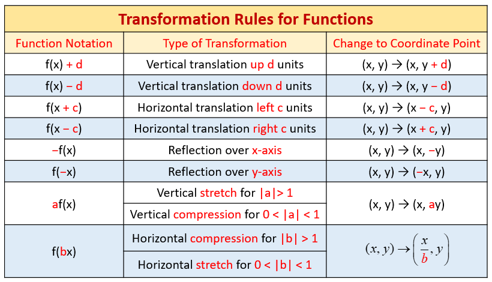
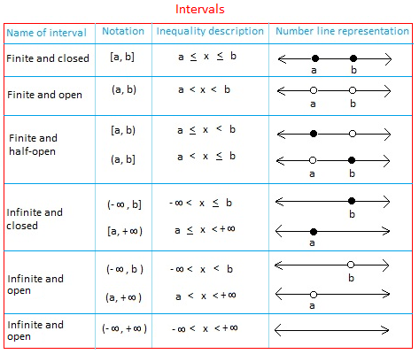

Truth Tables for NOT, AND, OR, and IMPLIES
| $P$ | $Q$ | $\neg P$ | $P\wedge Q$ | $P\vee Q$ | $P\rightarrow Q$ |
|---|---|---|---|---|---|
| T | T | F | T | T | T |
| T | F | F | F | T | F |
| F | T | T | F | T | T |
| F | F | T | F | F | T |
Function transformations

Midpoint of $(x_0,y_0),(x_1,y_1)$ is given by $$\left(\frac{x_0+x_1}{2},\frac{y_0+y_1}{2}\right)$$ and the distance $d$ is given by $$d=\sqrt{(x_0-x_1)^2+(y_0-y_1)^2}.$$
Intervals are lenghts described by their endpoints. Whenever the endpoint is included (a filled dot), we use square brackets. Whenever the endpoint is not included (an open dot), we use parenthesis. When one endpoint is $\infty$ or $-\infty$, we generally use parenthesis since we cannot realistically reach that endpoint.

The derivative of a function $f$ at $x=a$ is $$f'(a)=\lim_{h\rightarrow 0}\frac{f(a+h)-f(a)}{h}$$
We talked about funny stuff that happens with the axiom of choice during one meeting for entertainment. The axiom of choice "loosely" states $$\text{For any nonempty set, we can make a choice function } f \text{ that maps this set to an element of that set, our "chosen element".}$$ Here are some problems when you accept this axiom:
You can prove that there are disjoint subsets $A,B$ of $\mathbb{R}$ where the "length" (more specifically, the outer measure) of $A\cup B$ is not equal to the sum of the length of $A$ and length of $B$. You learn more about this in the topic of measure theory. Almost all of measure theory can be thrown out the window without choice!
Often, it is used to prove that things exist that cannot explicitly be constructed. We cannot explicitly construct $A,B$ in above, but we know they exist! This is seen by many as a philisophical problem.
The Banach-Tarski Paradox is a consequence of the axiom of choice that says that we can cut up a sphere into some finite number of pieces and move them around to make two copies of the sphere of equal volume.
Similarly, when you reject this axiom:
You can no longer choose certain items from a set casually. It becomes mathematically not guaranteed that you can make a function to describe which sock from a pair you want to put on first one morning.
You can make an infinite cardinality smaller than $\aleph_0$, the number of integers.
Many more neat consequences of rejecting/accepting can be found here. If you're interested seeing excerpts from the book or learning more, let me know!